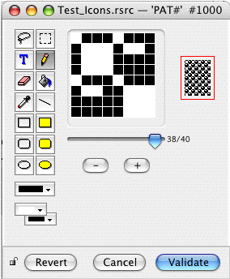
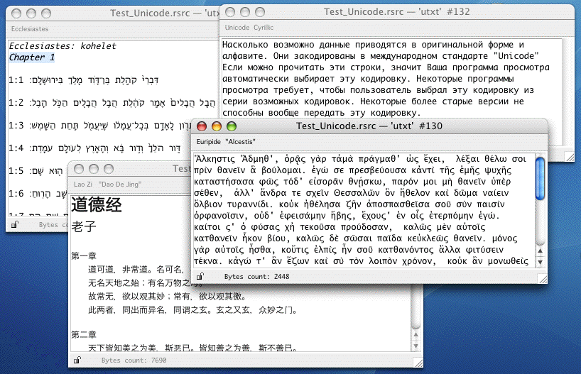

Les interfaces d'édition (appelés aussi éditeurs dédiés) sont des modes d'édition qui définissent une interface graphique dédiée spécifiquement à un type de ressources particulier (ou à une famille de types). Elles diffèrent de l'édition par gabarits en ce qu'elles ne reposent pas sur l'existence d'un gabarit descriptif prédéfini. Elles sont aussi en général plus puissantes que les gabarits car elles sont écrites spécifiquement pour tenir compte de toutes les particularités du type concerné. Par exemple, une interface d'édition pour les ressources de type 'TEXT' sera capable de gérer les éléments stylistiques, tels que le choix de polices, de taille, de style de caractères (gras, italique etc.): l'éditeur de gabarits est aussi capable d'éditer une ressource de type 'TEXT' mais il ne peut pas tenir compte du style.
Les interfaces d'édition sont parfois appelées éditeurs graphiques mais cette dénomination est imprécise dans la mesure oùl'éditeur de gabarits construit lui aussi des interfaces graphiques.
Rezilla possède plusieurs interfaces d'édition introduites dans différentes versions:
De futures versions de Rezilla ajouteront d'autres interface d'édition.
L'éditeur de texte possède trois menus: Font, Size et Style placés en haut de ses fenêtres d'édition.
Si l'on édite une ressource de type 'TEXT' pour laquelle une ressource de type 'styl' de même numéro existe, Rezilla lit les informations de style (police, taille, forme) contenues dans cette ressource et les applique au texte. Autrement, la ressource texte est affichée avec les valeurs par défaut de police, taille et forme.
Lorsqu'une nouvelle ressource de type 'TEXT' est créée, l'éditeur de texte utilise a priori les réglages par défaut. Si des modifications de style ont été apportées au moyen de l'un des trois menus, Rezilla créera automatiquement une ressource de type 'styl' de même numéro que la ressource 'TEXT' au moment de la sauvegarde de la ressource afin de conserver les données stylistiques.
Il permet d'éditer des ressources contenant des images bitmaps. Cela inclut les icones (petites, mini ou grandes), les familles d'icones, les motifs, les curseurs. Plus précisément, l'éditeur supporte les types de ressources suivants:
'cicn', 'crsr', 'CURS', 'icl4', 'icl8', 'icm#', 'icm4', 'icm8', 'ICN#', 'ICON', 'ics#', 'ics4', 'ics8', 'PAT#', 'PAT ', 'ppat', 'SICN'
L'éditeur d'images possède plusieurs outils permettant la création et la modification des ressources bitmaps. Une fenêtre typique d'édition ressemble à ceci:

La partie gauche de la fenêtre comporte les outils d'édition ainsi que les boutons de motifs et de couleurs. On dispose des outils suivants (de gauche à droite et de haut en bas): lasso, sélection, texte, crayon, gomme, seau, pipette, ligne, rectangle, rectangle plein, rectangle arrondi, rectangle arrondi plein, ovale, ovale plein. En outre, les fenêtres d'édition des curseurs possèdent un outil symbolisé par une croix rouge en forme de x permettant de désigner le pixel servant de point actif (hotspot).
En-dessous de la palette d'outils se trouvent trois boutons donnant accès à la palette de motifs,la palette de couleurs de premier plan et la palette de couleurs de second plan.
Au milieu de la fenêtre se trouve la zone de dessin dans laquelle chaque pixel de l'image peut être modifié au moyen de l'un des outils d'édition.
Dans la partie droite de la fenêtre, le panneau d'échantillons affiche l'image à sa taille réelle ainsi que le masque correspondant lorsque c'est nécessaire. Les échantillons sont instantanément mis à jour dès qu'une modification est apportée à la zone de dessin.
En outre, les fenêtres d'édition des ressources 'SICN' (suite d'images noir et blanc) et 'PAT#' (suite de motifs) possèdent un curseur permettant de sélectionner une image particulière dans la suite ainsi que des boutons Plus et Moins. Le bouton Plus permet d'ajouter une nouvelle image à la fin de la suite. Le bouton Moins permet de supprimer de la suite l'image couramment sélectionnée.
Lorsqu'une fenêtre de l'éditeur d'images est ouverte, quatre nouveaux menus sont insérés dans la barre de menus:
L'éditeur Unicode de Rezilla permet d'éditer des ressources contenant du texte Unicode dans la forme UTF-16 (comme par exemple des ressources de type 'utxt').
Il possède trois menus: Font, Size et Style placés dans la barre de menus. Une fenêtre d'édition typique ressemble à ceci:

Par défaut, Rezilla utilise les polices de caractères adéquates pour afficher les textes en fonction des codes qu'ils contiennent. Ce comportement est en fait contrôlé par une préférence appelée Do Font Substitution qui peut parfois rallentir les tâches d'édition dans le cas de gros documents. Si l'on sait quelle police utiliser, on peut aussi désactiver cette préférence (dans le panneau Éditeurs des Préférences) et sélectionner la police souhaitée dans le menu Font.
On notera que les menus de style et de taille de police sont là uniquement pour faciliter le travail d'édition mais que, dans la version courante, les modifications stylistiques ne sont pas mémorisées, ni stockées dans une ressource 'styl'.
Une ressource 'aete' (ou 'aeut') peut contenir plusieurs suites telles que la suite dite Required Suite (avec les termes Open, Quit etc.), la suite Core Suite (avec les termes Count, Make etc.) et d'autres suites comportant des termes spécifiques à une application. Chaque suite peut contenir des informations concernant quatre catégories d'objets: événements, classes, opérateurs de comparaison et énumerations. Cette structure est reflétée par l'éditeur Aete qui possède une unique fenêtre et permet de sélectionner une suite à partir d'un menu-bouton. Une barre avec quatre onglets appelés Events, Classes, Comparison Operators et Enumerations permet de choisir une catégorie et d'afficher un panneau avec toute l'information nécessaire relative à cet objet. Si plusieurs objets d'un certain type sont définis dans une suite, l'éditeur affiche un curseur pour passer de l'un à l'autre. S'il n'y a qu'un seul objet, aucun curseur n'est affiché. S'il n'y en a aucun, le panneau correspondant est vide.
Une fenêtre d'édition de ressource Aete typique ressemble à ceci:
Lorsqu'une fenêtre de l'éditeur Aete est active, un nouveau menu appelé Terminology est inséré dans la barre de menus. Il comporte des commandes pour ajouter ou supprimer des suites, ou pour ajouter ou supprimer des objets dans la suite courante. En fonction de l'objet couramment édité, certaines commandes du menu peuvent être désactivées.
La commande Export Terminology permet d'exporter les données d'une ressource 'aete' ou 'aeut' sous forme de fichier texte au format XML, DeRez, Sdef, HTML ou texte:
Caveat: on notera que Rezilla n'opère pas la conversion de caractères spéciaux (comme les symboles inférieur ou supérieur, les apostrophes, les esperluètes) en entités Xml. Il faudra éditer les fichiers XML obtenus si certaines chaînes comportent de tels caractères.
Important: Les fichiers exportés en format XML, Sdef ou HTML sont encodés en UTF-8 tandis que les fichiers exportés en format texte ou DeRez sont encodés en encodage MacRoman.
La commande Import Terminology permet d'importer des données depuis un fichier XML dans une ressource 'aete' : on peut pour cela créer une nouvelle ressource 'aete', l'éditer et choisir la commande Import Terminology dans le menu Terminology. Le fichier XML peut aussi être importé dans une ressource existante : les nouvelles données sont ajoutées aux données existantes. Le fichier XML doit impérativement utiliser le format défini dans la DTD jointe au projet (aete.dtd, à ne pas confondre avec sdef.dtd).
Ce n'est pas un éditeur graphique complet mais plutôt un visualisateur. Si l'on exécute un double-clic sur une ressource d'image (de type 'PICT'), Rezilla affiche cette image.
Les commandes Copy, Cut et Paste sont activées. Il est possible de copier l'image dans le presse-papier: il n'y a pas de sélection à faire, l'image entière est automatiquement copiée. À l'inverse, si le presse-papiers contient une image (techniquement parlant, s'il contient des données de type 'PICT'), Rezilla remplace l'image courante par le contenu du presse-papiers.
Cela permet de créer des images dans une application graphique externe et de les importer dans Rezilla. Notez qu'il est aussi possible de copier directement des données graphiques depuis le presse-papiers dans une table de ressource de Rezilla (voir la section Copy, Cut and Paste dans ce document).
Ce n'est pas un éditeur à proprement parler mais plutôt un lecteur de sons. Si l'on exécute un double-clic sur une ressource de son (ressource de type 'snd '), Rezilla joue le son sur la sortie audio de l'ordinateur. Assurez-vous que le volume n'est pas réduit à 0 sur votre système.